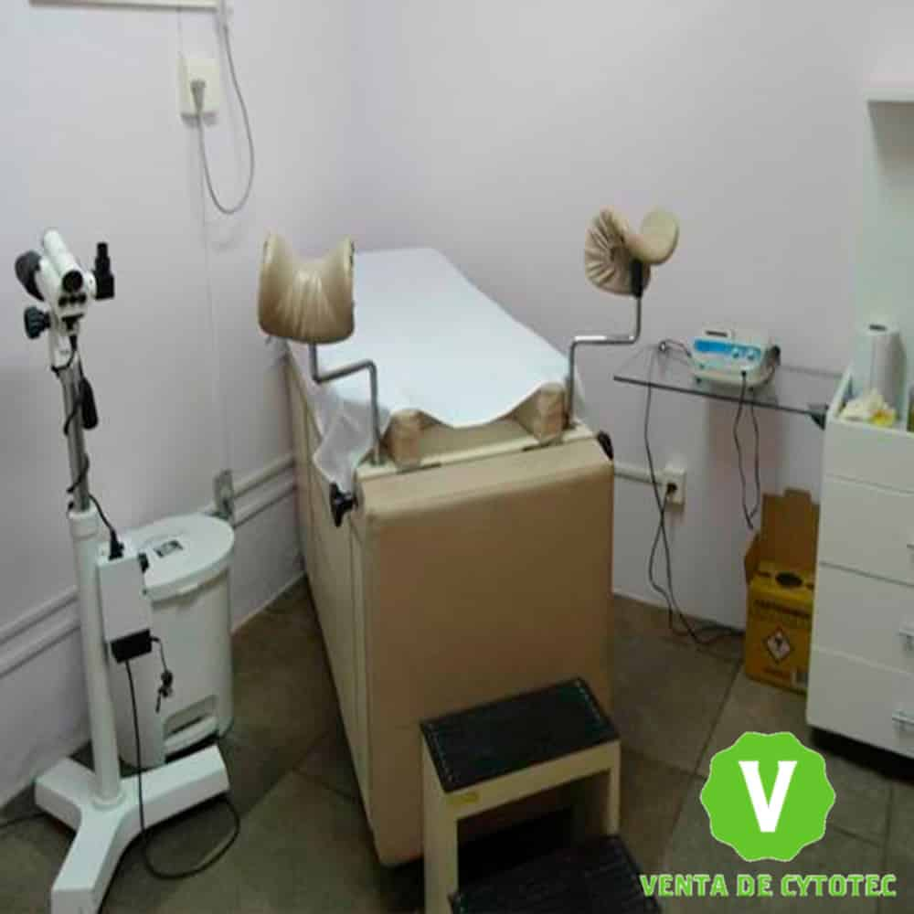
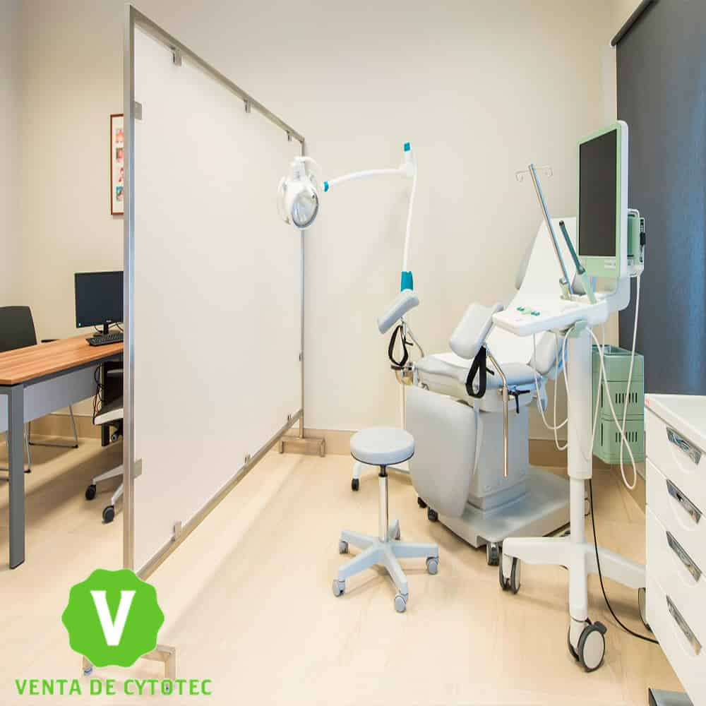
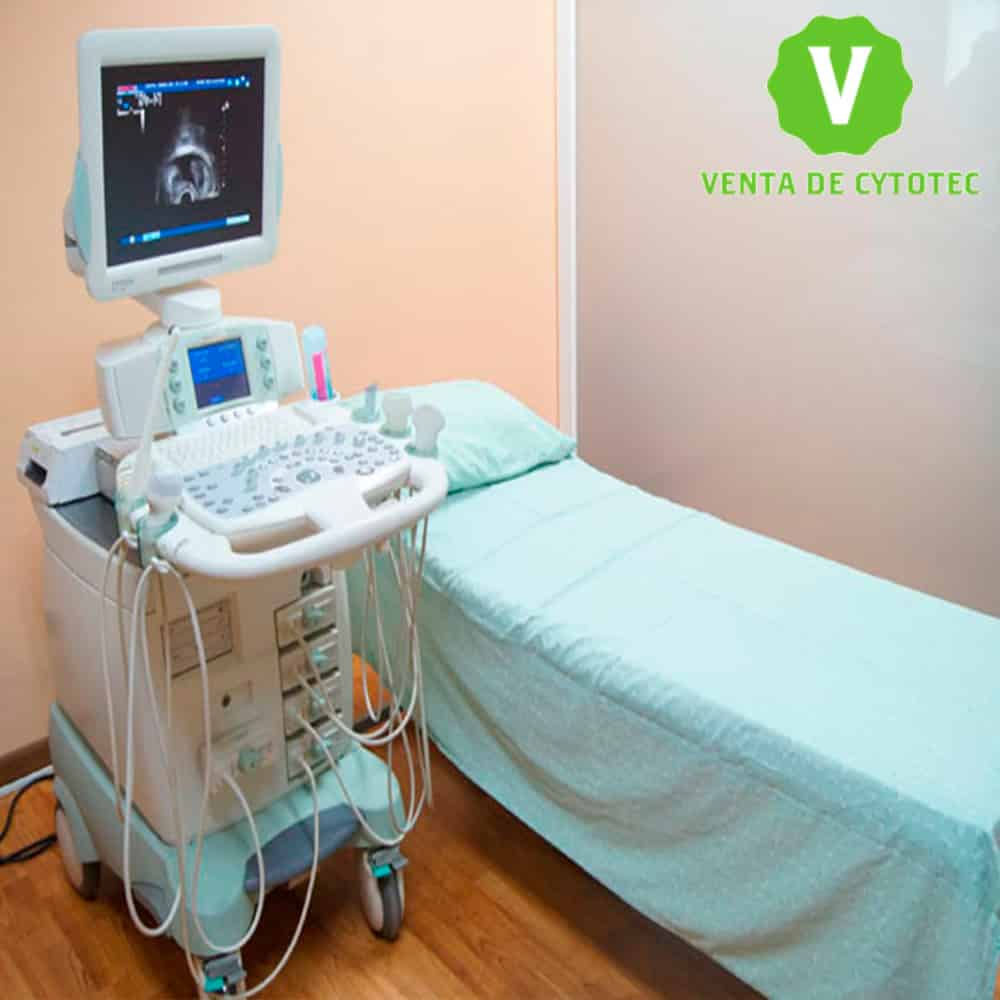

VENTA de
PASTILLAS ABORTIVAS
CYTOTEC en Lima
y sus Distritos
Aquí
- Abortos en Lima
- Aborto seguro
- Píldoras abortivas en Lima
- Abortos con Cytotec en Lima
- Tipos de aborto
- Cytotec en Lima
- Ventajas del uso de Cytotec
- Efectos secundarios después de tomar misoprostol
- Donde Comprar Pastilla Abortiva
- El precio de Misoprostol En Lima
- Donde Puedo Comprar Cytotec Sin Receta En Lima
- Pastillas Abortivas A Domicilio
- Cytotec WhatsApp
- Legrado Uterino en Lima
Actualmente el uso de Cytotec (misoprostol) en lima y todo el Perú. es exclusivo como tratamiento contra ulceras y padecimientos estomacales, pero su uso clandestino como tratamiento abortivo está respaldado por la Organización Mundial de la Salud (OMS) como un método seguro y confiable con las acotaciones necesarias relacionadas con el uso correcto y dosis exacta, este tipo de método de aborto es legal si se practica dentro del tiempo estipúlalo o bajos ciertas circunstancias médicas en la cual se considere como la única alternativa clínica. El aborto con Misoprostol es hoy día algo común, sobre todo en los países donde la interrupción del embarazo es penada por la ley. Y como consecuencia de las barreras legales y del estigma social y moral que rodea al aborto, las mujeres prefieren someterse a los efectos de este componente principal para terminar con su gestación
Abortos en Lima
es la finalización de forma brusca de un embarazo por medio de la muerte del embrión o el feto. Esto supone un cambio brusco en el proceso fisiológico del embarazo que ya estaba en curso.
Aborto seguro
es un procedimiento clínico absolutamente confiable cuando se realiza con la tecnología adecuada, los insumos necesarios y el apoyo de profesionales de la salud capacitados de igual manera se cataloga como, aborto seguro aquel que se realiza en casa bajo previo control médico y con la información, asesoría y medicamentos adecuada para realizarlo de manera efectiva y segura.
Abortos con Cytotec en Lima
es la finalización de forma brusca de un embarazo por medio de la muerte del embrión o el feto. Esto supone un cambio brusco en el proceso fisiológico del embarazo que ya estaba en curso.
Tipos de aborto:
- Aborto inducido: es el como el resultante de maniobras practicadas deliberadamente con ánimo de interrumpir el embarazo
- Aborto legal: cuando es realizado bajo las leyes despenalizadoras del país donde se practica
- Aborto ilegal: cuando es realizado en contra de alguna de las leyes del país donde se practica.
Cytotec en Lima
Es un medicamento abortivo que puede ser usado en la interrupción de hasta 12 semanas de embarazo (3er mes) y tiene una tasa de éxito superior al 90%. Un aborto con pastillas Cytotec es seguro y similar a un aborto espontáneo.
Elmisoprostoles el principio activo de este medicamento legal que se utiliza comoprotector gástricoy para laprevención de úlceras,uno de los efectos adversos es que provoca contracciones uterinas que pueden expulsar el producto gestacional. La Organización Mundial de la Salud (OMS) lo considera el fármaco más recomendado a la hora de practicar unaborto seguroy eficaz hasta la semana 11 de gestación.
Ventajas del uso de Cytotec
- Reducción de mortalidad.
- no se acumula en el cuerpo de la mujer
- no causa daño a su fertilidad
- puede realizar en un domicilio
- no requiere intervención quirúrgica.
Efectos secundarios después de tomar misoprostol
- sangrado muy abundante (manchando más de dos toallas sanitarias de talla grande por hora, por más de dos horas consecutivas)
- sangrado continuo por varios días
- mareos o aturdimiento
- sangrado que se interrumpe y reaparece dos semanas después de manera repentina y extremadamente fuerte. Puede requerir aspiración manual endouterina o dilatación y legrado.
- sangrado escaso o nulo en los primeros siete días después de haber utilizado el misoprostol, lo que puede sugerir que no se generó una interrupción del embarazo y que se requiere repetir la ronda de misoprostol o realizar un aborto quirúrgico.
- dolor abdominal severo que dura más de 24 horas y aparece después de la última dosis de misoprostol
Píldoras abortivas en Lima
son un grupo de medicamentos determinados que cumple la función de interrumpir el embarazo. Este método con medicamentos es la alternativa que prefieren las mujeres al interrumpir su embarazo. Tiene un bajo costo, no es invasivo y puede realizarse en casa hasta la semana 9 u 11 de embarazo.se recomienda tomar dos medicamentos distintos para este proceso son el Misoprostol y la Mifepristona Son medicamentos seguros y de alta efectividad para inducir el aborto. A pesar de ello, deberás de entender que como todo medicamento y procedimiento clínico hay contraindicaciones, riesgos y otros datos que debes de conocer.
- Mifepristona: La mifepristona es un compuesto esteroideo que bloquea la acción de la hormona progesterona. Entre otras funciones, la progesteronapromueve la formación de vasos capilares para que el embrión pueda alimentarse. Al bloquear su acción, el saco gestacional se debilitará y facilitará su desprendimiento.
- Misoprostol: El misoprostol es una prostaglandina, actúa sobre el tejido liso del cual está conformado el útero. Será el responsable de abrir el cuello uterino y de crear fuertes contracciones para que el útero pueda expulsar el tejido embrionario.
Donde Comprar Pastilla Abortiva
La venta de píldoras abortivas en Lima. esta regularizado por algunos controles gubernamentales los cuales establecen que para la venta en farmacias o boticas deben presentar la receta médica certificada, por tal motivo es casi imposible poder adquirir este medicamento en las farmacias sin receta, ya que se exponen a penalizaciones y multa por incumplimiento. También puedes ingresar a nuestra página web informativa donde podrás adquirir las pastillas abortivas originales y totalmente garantizadas a la vez cuentas con la asesoría de un especialista que te guiara paso a paso lo que te garantiza un procedimiento seguro y efectivo.
El precio de Misoprostol En Lima
El precio de las pastillas Cytotec en Lima. es relativo por una razón en específico, es decir como normativa legar y obligatoria se debe contar con una receta médica certificada por un gastroenterólogo ya que el uso obstétrico no es legal en Perú. salvo algunos casos excepcionales. si tiene la receta médica puedes acudir a cualquier farmacia o botica y compra las pastillas Cytotec a un precio económico debido a los convenios entre las farmacéuticas y los laboratorios.
El precio de nuestro producto está relacionado principalmente con su tiempo de embarazo. ya que ofrecemos paquetes especifico según su tiempo de gestación, sumado a esto. En nuestra página web informativa. Garantizamos la venta del mejor Fármaco abortivo en Perú, Cytotec 200mcg de Laboratorio Pfizer Originales, cada blíster cuenta con fecha de elaboración, caducidad, lote, registro sanitario, las pastillas son blancas de forma hexagonal con el dígito 1461 grabado. Aparte de ofrecer un producto garantizado brindamos asesoría ante cualquier duda y servicios de envíos o delivery.
- Tiempo de gestación de 8 semanas o menos. Tratamiento: 8 pastillas de Cytotec, 2 de mifepristona, antibióticos y antinflamatorios todo el tratamiento a un costo de 250 soles.
- Tiempo de gestación mayor de 8 semanas hasta 12 semanas. tratamiento: 12 pastillas de Cytotec, 4 de mifepristona, antibióticos y antinflamatorios todo el tratamiento a un costo de 300 soles.
Donde Puedo Comprar Cytotec Sin Receta En Lima
Existen distintas páginas webs informativas donde se ofertan las pastillas Cytotec sin receta médica. es uno de los canales recomendado, para adquirir este medicamento con entrega a domicilio (delivery). Si necesitas interrumpir un embarazo, te recomendamos nuestro servicio efectivo y garantizado: tenemos a la venta el mejor Fármaco abortivo Misoprostol Cytotec 200mcg de Laboratorio Pfizer Originales, cada blíster cuenta con fecha de elaboración, caducidad, lote, registro sanitario, las pastillas son blancas de forma hexagonal con el dígito 1461 grabado. Te invitamos a contactarnos a través del WhatsApp por nuestro número de teléfono. destacado en nuestro website. no solo ofrecemos la mejor asesoría personalizada, a cada una de nuestras clientas, sino que también garantizamos la venta de un excelente producto de calidad con un stock en constante renovación. A un excelente precio según la dosis que requieras dependiendo de tu tiempo de gestación.
Pastillas Abortivas A Domicilio
En nuestra Página Informativa Web brindamos información, precios y características específicas de nuestros productos. El propósito del envió exprés a domicilio es su amplia cobertura en todo el país (Perú) al realizar las compras de Cytotec con nosotros garantiza un producto de alta calidad. Solicítalo por nuestro WhatsApp y medios de contactos, compra desde la comodidad de tu hogar y Págalo Contra Entrega En Lima.
Cytotec WhatsApp
Nuestra página web fue creada con la finalidad de informar correctamente sobre el uso de Cytotec para interrumpir un embarazo temprano. En éste website podrás encontrar toda la información que necesitas para aclarar tus dudas sobre cómo llevar a cabo el tratamiento de manera efectiva. tenemos a la disposición de nuestros distinguidos clientes, nuestro número telefónico con WhatsApp a través del cual. puedes envíanos tu caso y serás atendida de manera personalizada 24/7
Legrado Uterino en Lima
Es unaintervención quirúrgicarealizada por médicos ginecólogos, en un hospital o clínica, con anestesia local, por lo general resultante bastante descomplicada y elemental,donde realizan un curetaje o raspado del útero y sus paredes interiorespara retirar el endometrio que es la capa mucosa que lo recubre. Se realiza generalmente luego de un aborto espontáneo.
también se le puede llamar:
- Cirugía
- Curetaje
- Cureta
- DilataciónY Legrado (D Y L)
- Raspado Uterino.
funciones importantes del legrado, es vaciar todo el interior del útero o tomar muestras del mismo para llevar a análisis. Por lo tanto, dicha técnica se realiza con los siguientes fines:
- Diagnosticar cáncer de útero: aunque es poco frecuente, este cáncer es posible que aparezca en mujeres mayores que ya alcanzaron la menopausia. De esta manera, con el legrado se analiza el endometrio en busca de alertas malignos o negativos. Sin embargo, no es el tratamiento definitivo en caso de detectar la presencia de células cancerígenas.
- Abortos espontáneos: para mala noticia de las mujeres, a veces el embrión que se encuentra en crecimiento puede morir en el embarazo y existen dos formas de expulsión: si el embrión queda dentro puede llamarse aborto retenido, pero si se realiza por completo se le denomina aborto completo. Si el caso de la mujer es el primero, entonces se procede a realizar el legrado para eliminar los restos de embrión
- Menstruaciones abundantes: se usa el legrado para verificar si el endometrio tiene algún tipo de anomalía que produzca menstruaciones excesivas y poco normales.
- Períodos menstruales irregulares:al igual que el punto anterior, se puede usar esta técnica si la mujer tiene manchas o sangrado fuera del tiempo de menstruación regular. Por ello el legrado pudiera solucionar estos sangrados anormales.
- Abortos provocados: únicamente realizable en el trimestre tres del embarazo, por decisión de la mujer, si su vida está en riesgo o por exámenes se sabe que el feto vendrá con alguna malformación o no se podrá desarrollar. De esta forma se extrae dicho embrión además del endometrio y sus restos
- Incrustación de dispositivos intrauterinos (DIU):en ocasiones ocurre que estos aparatos, los DIU, se encajan en el útero y sus paredes internas por lo que es necesario realizar un legrado para poder retirarlo.
- Miomas o pólipos endometriales: estos crecimientos en el útero de forma anormal se eliminan por un legrado pues pueden provocar abortos espontáneos, menstruaciones excesivas o esterilidad.
Comprar pastillas Cytotec
Comuniquese con nosotros dando clicc Aquí para darle mayor informacion.
Venta de Pastillas Cytotec
Cytotec - Misoprostol
Vendemos pastillas Cytotec originales del laboratorio Pfizer, pastilla tiene 200 mg y
viene sellado en su respectivo blister, presenta la fecha de fabricacion, fecha de
vencimiento, registro sanitario y las características por dentro. Las pastillas son
pequeñas de forma hexagonal marcada con su determinado código 1461 que la acredita con
la veracidad de las mismas.
Es necesario 2 dosis. Cada dosis constituye de 4 pastillas, en total serian 8 pastillas
(cada una, contiene 200 mg. de Misoprostol). Se les recomienda a los pacientes tener una
previa ecografía. No realizar dicho procedimiento si se tiene diabetes, hepatitis tipo
C. Dificultades para la coagulación de la sangre y que tampoco tengan ningún tipo de
puntos como cesáreas recientes en el área del abdomen
En Resumen:
- Tabletas: Cito protector y antisecretor para el tratamiento de la úlcera péptica
(Misoprostol)
- Forma Farmacéutica y Formulación
- Cada TABLETA contiene: Misoprostol 200 mcg. Excipiente, c.b.p. 1 tableta.
Tabletas con 200 mcg de misoprostol sin recubrimiento de color blanco y con forma
hexagonal; de un lado, llevan grabadas las leyendas “1461”.
Que hacer después de haber usado Cytotec
Se recomienda que después de haber realizado el aborto tomar un reposo aproximado de entre 1 a 2 días, estando en casa el reposo será totalmente normal, esto con la finalidad de cicatrizar rápidamente dentro del útero donde se produjo el desprendimiento.Comuniquese con nosotros al Aquí YA! para darle mayor informacion.
Pastillas Abortibas Cytotec en Lima
Pastillas Abortibas Cytotec en Lima
Que es una Pastillas abortivas o pastillas para abortar
La píldora abortiva, aborto inducido o aborto con medicamentos es un modo segura y eficientes de impedir un embarazo en su periodo inicial.
¿Cuándo puedo tomar la píldora abortiva?
Lo habitual, la pastilla abortiva se ingiere hasta 70 días (10 semanas) en tu último período menstrual luego del primer día. Si ya pasaron 71 días o más desde tu última menstruación, puedes obtener un aborto elaborado en un consultorio para interrumpir el embarazo.
¿Por qué eligen la píldora abortiva?
Cualquier otro tipo de aborto que elijas depende de las circunstancias y
particularidades personales. A diferentes personas tienen la idea de que en el
caso del aborto con farmacos no tienen que ejecutarse un procedimiento en una
clínica abortiva o especializada en este tipo de circunstancias. Puedes
realizarte el aborto con medicamentos en tu casa o en otro lugar que elijas que
te parezca cómodo. Puedes elegir tu compañia en el proceso del aborto o si vas a
realizarlo sin algún acompañante. Habiendo dicho lo siguiente, que el aborto con
fármacos o con medicamentos es equivalente al aborto espontáneo, multitud de
personas opinan que es más “natural” y menos invasivo.
Tu doctora, enfermera o el personal del consultorio pueden auxiliar a decidir
cuál es el modo indicado para usted.
¿Cómo funciona la píldora abortiva Cytotec?
Tenemos Una Unida Odstetricia referente en Lima, Del Mismo Modo, Nuestro Servivios Es Lider En Lima Capas De Darle El Mejor Tratamiento Si Sufre De Un Cytotec.
Aborto espontáneo, ¿que es?
El vocabulario médico para esta forma de pérdida es “aborto espontáneo”.
El aborto espontáneo es cuando un feto muere antes de la semana veinte de que la
mujer alla quedado embarazada. El aborto espontáneo habitualmente ocurre
anticipado en un embarazo, entre ocho y diez abortos espontáneos acontecen
durante los primeros tres meses.
Muchas personas perciben este tipo de pérdida del embarazo. De hecho, entre el
10 y el 20% de los embarazos terminan en abortos espontáneos. De hecho es algo
común, el aborto espontáneo puede ser emocionalmente difícil de afrontar. Es
normal tener sentimientos de pérdida y duelo.
El aborto espontáneo y sus causas
Es difícil llegar a saber justamente por qué se causó un aborto espontáneo, pero
casi nunca es causado por algo realizado por la mujer embarazada. Las acciones
normales como hacer ejercicio, trabajar, tener sexo, y tomar la mayoría de los
fármacos NO inducen un aborto espontáneo. Las lesiones menores, como las caída,
habitualmente tampoco son la causa de un aborto espontáneo. Algunas cosas que se
sabe que producen un aborto espontáneo incluyen las siguientes:
• Que el óvulo fecundado posea un número disparejo de cromosomas (genes). Esto
se produce al azar, de manera que no lo puedes impedir ni estimular.
• Algunas enfermedades, como la diabetes grave, pueden desarrollar el riesgo de
padecer un aborto espontáneo.
• Cuando se produce una infección muy seria o una lesión mayor pueden originar
un aborto espontáneo.
• Los abortos espontáneos tardíos —después de los 3 meses— pueden suceder por
anomalías en el útero.
• Si ya se ha padecido de 2 abortos espontáneos continuos, es muy posible que
tengas otro.
tipos de aborto espontáneo
Existen diferentes tipos de aborto espontáneo:
• Amenaza de aborto espontáneo: posees sangrado vaginal, en algunos casos con
cólicos moderados, pero el cuello uterino permanece cerrado. La mitad de las
veces, el sangrado se contiene, y el embarazo se desarrolla normalmente. La otra
mitad de las amenazas terminan irremediablemente en abortos espontáneos y en la
pérdida del embarazo.
• Aborto espontáneo inevitable: la hemorragia aumenta, y tu cuello uterino se
abre. Si sucede esto, no hay probabilidades de que tu embarazo se extienda.
• Aborto espontáneo incompleto: parte del tejido del embarazo sale de tu útero,
y parte queda dentro. A veces, es necesario un tratamiento para quitar el tejido
restante.
• Aborto espontáneo completo: todo el tejido del embarazo sale del útero.
Generalmente no es necesario ningún tratamiento adicional.
• Aborto espontáneo retenido: no tienes cólicos o sangrado, pero el ultrasonido
indica un embrión sin latido cardíaco o un saco gestacional vacío, es decir, sin
el embrión. Generalmente el tejido sale del cuerpo solo, pero puedes necesitar
tratamiento.
Embarazo no deseado
Un embarazo no deseado es un suceso muy estresante para la mujer, ya que debe
afrontar una decisión muy significativa de manera emocional y física.
¿Qué es el embarazo no deseado?
El embarazo no deseado se provoca cuando la mujer queda embarazada sin quererlo
o sin una organización anticipada, otros casos podrían tratar que fallara el
anticonceptivo o por la fisura hecha en un condón.
Es muy significativo que la mujer, y mas que todo la adolescente posea una
anticipada educación sexual, exíste aproximadamente un 60% de mujeres jovenes
que han quedado embarazadas sin quererlo y terminar abandonando la escuela.
Cómo prevenir un embarazo no deseado
Para impedir un embarazo no deseado, lo más sustancial es utilizar un método
anticonceptivo, como por ejemplo si no posees una pareja estable lo mejor es
manipular un condón que además bien manipulado puede proteger del contagio de
enfermedades de transmisión sexual.
Cuando una mujer queda embarazada es importante que piense de manera libre qué
es lo mejor para ella, si continuar con su embarazo o abortar. En caso de tomar
la decisión de interrumpir su embarazo debe acudir a una clínica de aborto legal
y segura donde le presten toda la ayuda que necesita tanto emocional como
física.
Causas del embarazo no deseado
• tener relaciones sexuales sin utilizar métodos anticonceptivo.
• Realizar el coito interrumpido en las relaciones sexuales con penetración.
• Existen jóvenes que mantienen la idea que si tienen relaciones sexuales en su
primera vez no hay posibilidad de un embarazo y esto es algo equivocado
• Tener relaciones cuando la mujer esta menstruando.
• Hay quienes creen que por tener relaciones de pie impiden la concepción de un
embarazo
Embarazo no deseado en adolescentes
El embarazo no deseado en adolescentes se describe como la gravidez de menores
entre doce y diecinueve años.es denominado como embarazo no deseado ya que
existen restricciones al momento de continuar con los estudios y las
obligaciones que involucra mantener un bebe debido a que todavía mantiene
dependencia económica
El embarazo no deseado en la adolescencia esta ligado al embarazo precoz; ambas
términologias son utilizadas en ocasiones como sinónimos, ya que se piensa que
el embarazo es deseado después de esta edad.
Pastillas para abortar
¿Qué es Cytotec?
Se podría decir que cuando hablamos de cytotec o misoprostol estamos hablando de
medicamentos iguales
El cytotec es semejante a la Prostaglandina E1 (PGE1), medicamento utilizado
para evitar las úlceras gástricas, de igual manera es empleada para realizar
abortos espontáneos, para provocar un parto, impedir hemorragias postparto y
como método abortivo
El cytotec fue creado y mercantilizado por GD Searle y Company (ahora Pfizer),
bajo el nombre comercial antes mencionado. Por eso, Cytotec es apenas el nombre
comercial dado a Misoprostol.
¿Que Es Misoprostol?
De acuerdo a la OMS (Organización Mundial de la Salud), el Misoprostol es un
fármaco seguro y poderoso para un aborto hasta la semana doce de embarazo. Es un
tal fármaco que no causa daño alguno en la fertilidad de la mujer. Esto quiere
decir que, después de haber tomado este medicamento puede volver a quedar
embarazada de nuevo
El Cytotec en Lima
Cytotec

¿Que es el Cytotec?
El Cytotec o retraso de la menstruación son los signos prematuros de un embarazo, no
obstante, existen otras causas que pueden hacer que la regla no baje en el día
calculado, generalmente, algunos pocos días de retraso en la menstruación pueden ser
normales hasta en mujeres con ciclos menstruales normales, sin que tenga algo que ver
medicamente.
En mujeres que no han estado embarazadas. Incluso cuando el periodo menstrual no llegar
en un mes calculado, las probabilidades de ser algo relevantes son pequeñas. No
obstante, cuando hay un retraso de 3 meses seguidos de no bajar la regla. Tomamos en
cuenta que la mujer puede presentar amenorrea, en casos así, ya descartada la idea de
embarazo, se puede considerar que ciertas enfermedades son las causantes del Cytotec.
En las mujeres no embarazadas, incluso cuando la menstruación no viene en un determinado mes, la oportunidad de eso ser algo importante es pequeña. No obstante, cuando las reglas no se bajan durante 3 meses seguidos, consideramos que la mujer presenta amenorrea. En estos casos, una vez excluida la posibilidad de embarazo, algunas enfermedades pueden estar por detrás del cese de la menstruación.
Que Hacer si Tengo un Cytotec
Principalmente se debería acudir a un medico ginecólogo de confianza y realizarse los
determinados exámenes para encontrar las causas del Cytotec o amenorrea, ya resuelta la
causa del retraso menstrual lo consiguiente seria seguir con el tratamiento establecido
para impedir que este se vuelva a repetir.
Nosotros podemos ayudarte y asesorarte en consultorios privados apropiados para tu
salud, el retraso o Cytotec tiene solución. Tengan en cuenta que tienen libertad de
elegir la elección que mejor se adapte a su situación. Asistir al centro medico no mas
tenga dudas de retraso en la menstruación, cuanto menos tiempo deje pasar la solución
será mas sencilla
Recomendaciones
• debe descartar un embarazo, primeramente.
• Si esto pasa, lo recomendable sería ir a un especialista.
• Aconsejamos hacerse una ecografía abdominal y así poder detectar.
• abandono de las pastillas anticonceptivas puede conducir irregularidades.
• El especialista debe estar al tanto sobre cualquier variación que se haya sufrido.
Pastillas Abortibas
Pastillas Abortibas
1.- ¿Qué es y cómo funciona Cytotec (Misoprostol)?
Generalmente se creó con la finalidad de tratar las ulceras estomacales producidas por el uso continuo de analgésicos. No obstante, el cytotec también es utilizado en el mundo médico para interrumpir un embarazo como medicamento abortivo. Este afecta a todo el utero al ser unas prostaglandinas, es utilizado en el ámbito ginecológico para ayudar a mujeres que están en gestación inducir el parto, puesto que el medicamento cytotec dilata el cuello uterino proviocando contracciones para luego proceder a la eliminación del tejido y del embrión
2.- ¿Qué ocurre si hay poco sangrado?
Para que el tratamiento sea 100% efectivo tiene que haber un sangrado abundante, este es señal que el medicamento está haciendo efecto. Esto traer consigo coágulos de variable tamaño más tejidos entra las primeras tres horas. No obstante, si hay muy poco sangrado, es probable que el tratamiento no haya tenido los resultados esperados.
3.- ¿casos en los que el Cytotec no funcione?
POCAS SEMANAS DE EMBARAZO: cuando la mujer que va a realizar el tratamiento tiene
menos de 25 días de gestación es posible que el embrión aun no haya llegado al
útero, y si se utiliza este fármaco este provocara sintomas de colocos y poco
sangrado.
MALA UTILIZACION DEL FARMACO: El uso de cytotec debe utilizarse en un tratamiento de
diferentes etapas para poder tener un 97% de efectividad. En nuestra plataforma te
explicamos cómo usarlo correctamente.
BAJA DOSIS UTILIZADAS: en internet existen muchas personas que hablan sobre el tema
sin saber de ello, para que el medicamento cytotec tenga un 97% de efectividad en el
tratamiento debe contener la dosis precisa del medicamento abortivo cytotec para el
numero de semana de embarazo, esto con el fin de dilatar el útero lo suficiente como
para que embrión sea evacuado, dosis menor a las adecuadas dan como resultado que
con sea expulsado el contenido del útero o queden residuos.
MEDICAMENTOS FALSOS: se debe de tener precaución en donde y como se adquieren los
medicamentos, existen muchas maneras de que alguien pueda falsificar los
medicamentos, un indicativo de que se esta comprando medicamentos falsos es el bajo
costo que pueden llegar a vender estos. En nuestra pagina puedes adquirir
medicamentos originales ya que obtenemos el fármaco directo de las droguerías y
distribuidores oficiales del medicamento Cytotec en todo Perú.
UTERO NO DEBIL: algunas mujeres por su genética y desarrollo presentan un útero
fortalecido o ya anteriormente a usado pastillas abortivas cytotec en lima peru, lo
que ocacionado que el utero sea complicado de dilatar. Cuando la mujer presenta un
utero fuerte debe pasar un lapso de tiempo mayor para que haya un desprendimiento
del embrión causando dolor, pero no expulse ningún tejido.
4.- ¿En caso de no funcionar, que hago?
Todo depende de las semanas de embarazo que tengas:
• Recurrir a una dosis mayor de pastillas abortivas cytotec en Lima Perú que puedes
encontrar en nuestras páginas.
• Usar en combinación el cytotec con la mifepristona para una mayor efectividad
5.- ¿En qué consiste aborta con pastillas abortivas cytotec?
La ingesta de la pastilla cytotec por medio de la vía oral y vaginal, en un corto
tiempo que se debe de transcurrir provoca que en el útero haya contracciones y
resulte en la expulsión del embrión y tejido que este contenido dentro.
Se utiliza mayormente en las primeras etapas del embarazo.
Es semejante a tener un aborto espontaneo.
Es sencillo de realizar, ya que se puede hacer desde casa.
Lo síntomas que se produces después de realizar el tratamiento son transitorios y se
toleran.
Realizar el tratamiento con cytotec misoprostol conlleva un coste considerablemente
bajo con respecto a una intervención quirúrgica.
6.- ¿Cuál es la efectividad de las pastillas abortivas cytotec?
Realizar un tratamiento con cytotec misoprostol es uno de los procedimientos de estos
tipos que son más seguros y a la vez menos invasivos.
El que tan efectivo sea el medicamento abortivo cytotec misoprostol tiene mucho que
ver con el número de semanas de gestación que posea la mujer embaraza, teniendo en
cuenta esto cabe mencionar que la taza de efectividad varía entre el 80 al 98% de
efectividad.
7.- ¿Cuál es el tiempo recomendado para utilizar cytotec en mujeres embarazas?
Por lo general lo especialistas recomiendan usar el medicamento en las primeras semanas de embarazo, específicamente desde las primeras semanas hasta la semana 12, siendo este el tiempo para utilizarlo de forma segura y efectiva.
8.- ¿Qué le pasa al cuerpo de las mujeres cuando consumen las pastillas abortivas cytotec?
Generalmente las mujeres describen esta experiencia de diferentes maneras ya que no
en todas ellas padecen los mismos síntomas, esto teniendo mucho que ver con el
número de semanas de gestación que posea la embarazada ya que dependiendo de este se
puede presentar un sangrado excesivo.
Mientras transcurra el tratamiento puede presentarse una variedad de síntomas como
cólico, fiebre, vómito, diarrea, escalofríos, dolor de cabeza, por un lapso
aproximado de 8 horas, esto mientras se dilata el útero, los dolores que pueda tener
cada mujer depende del organismo que tenga. Los dolores se toman como algo normal en
el tratamiento ya que eso significa que el útero está en un proceso de dilatación.
9.- ¿Quiénes no pueden usar las pastillas cytotec para abortar?
Mujeres que presenten un cuadro alérgico al medicamento cytotec misoprostol y a sus
componentes.
Posean dificultad para coagular la sangre.
Embarazadas con hipertensión.
Padecimiento de anemia.
Problemas cardiovasculares.
10.- ¿Qué tiempo debe de esperas la mujer para quedar de nuevo embaraza después de usar cytotec?
Después de usar las pastillas abortivas, la mujer volverás a ovular después de haber pasado las 2 semanas por ende puede tener otro embarazo después de una aborto espontaneo con pastillas abortivas cytotec.
11.- ¿Cuánto tiempo debe pasar para que la mujer vuelva a menstruar?
Pasara un aproximado de mes y media, esto dependerá mucho del organismo de la mujer ya que las hormonas tardaran en volver a su estado normal
12.- ¿puedo quedar infértil al utilizar pastillas abortivas cytotec en lima Perú?
cytotec en lima tendrá efectos segundarios notorios que desaparecerán en un tiempo corto. El medicamento produce dilatación en el útero para que el embrión pueda ser expulsado Produciendo síntomas anormales al transcurso de 9 horas. Después queda un sangrado que aparenta al de la menstruación luego de haber pasado una semana, esto para que el tejado restante sea evacuado. Las pastillas abortivas cytotec en lima Perú no produce ningún síntoma de infertilidad en mujeres que en un futuro quieran volver a quedar embarazas
13.-¿si sangro en la primera dosis debo de tomar la segunda?
Lo apropiado será seguir con la dosis siguiente, ya que estudios realizados por distindas universidades peruanas dicen que la siguiente dosis disminuye la probabilidad de tener un aborto incompleto
14.- ¿Cuánto puede durar los síntomas y efectos de la pastillas abortivas cytotec en lima peru?
El medicamento cytotec misoprostol tiene una demora mínima en hacer efecto, los síntomas siguientes después de la tomas como cólicos, sangrado y diarrea puede perdurar hasta las 12 a 15 horas transcurridas.
15.- ¿se puede tomar cytotec solo por via oral?
No se aconseja consumir el medicamento cytotec en lima Perú solo de forma oral, ya que la gran parte del componente quedan disueltos en el estómago. Por lo general, al tomar cytotec en lima Perú solo de forma oral hace que los síntomas como dolores y la diarrea sean mayores. Se recomienda consumir pastillas abortivas cytotec en lima peru por dos vías, la oral y la vaginal usándose 12 pildoras en lapsos de 3 tiempos para asegurarse que este haga efecto.
16.- ¿se puede tomar analgésicos a la ves que se toma cytotec?
No se recomienda ya que al aliviar el dolor hace que el utero se contraiga, restringiendo la expulsión del embrión y tejidos restantes.
Clínicas para abortar
Contamos con consultorios especializados localizados en varios puntos
de la ciudad de Lima.
En la actualidad contamos con solo 2 formas, métodos o tipos para dar solución a un
retraso o Cytotec. Con medicamentos abortivos o con limpiezas quirúrgicas. El primer
método que es con pastillas abortivas consiste en consumir o tomar fármacos, pero solo
es recomendable hasta las doce semanas de embarazo, mientras tanto el método de la
limpieza quirúrgica con anestesia trata de una intervención quirúrgica que es realizada
hasta las dieciocho semanas de embarazo.Los 2 métodos mencionados anteriormente son
totalmente seguros siempre y cuando se realice bajo la supervisión de especialistas en
habientes apropiados para realizar cualquiera de los servicios.
Puede comunicarse con nosotros para mayor información y le brindaremos servicio
especializado y atención de 7:00 am a 10:00 pm. De lunes a sábado.
Consultorios
Chachapoyas
Bagua

Bongará
Yurimaguas
Iquitos
Rodríguez de Mendoza
Clínicas para abortar
Contamos con consultorios especializados localizados en varios puntos
de la ciudad de Lima.
En la actualidad contamos con solo 2 formas, métodos o tipos para dar solución a un
retraso o Cytotec. Con medicamentos abortivos o con limpiezas quirúrgicas. El primer
método que es con pastillas abortivas consiste en consumir o tomar fármacos, pero solo
es recomendable hasta las doce semanas de embarazo, mientras tanto el método de la
limpieza quirúrgica con anestesia trata de una intervención quirúrgica que es realizada
hasta las dieciocho semanas de embarazo.Los 2 métodos mencionados anteriormente son
totalmente seguros siempre y cuando se realice bajo la supervisión de especialistas en
habientes apropiados para realizar cualquiera de los servicios.
Puede comunicarse con nosotros para mayor información y le brindaremos servicio
especializado y atención de 7:00 am a 10:00 pm. De lunes a sábado.
Consultorios
Chachapoyas
Bagua
Bongará
Yurimaguas
Iquitos
Rodríguez de Mendoza
Contactanos
Mantente En Contacto Con Nosotros Para Un Servicio Personalizado
Contacto

- Av. Canevaro 350, Lima Lima
- Aquí
- cytotec2010enlima@gmail.com
- lima.farmacias-cytotec-peru.shop
ccytotec Lima pastillas abortivas Lima misoprostol Lima cuanto cuesta un aborto en Lima clinicas seguras para abortar Lima